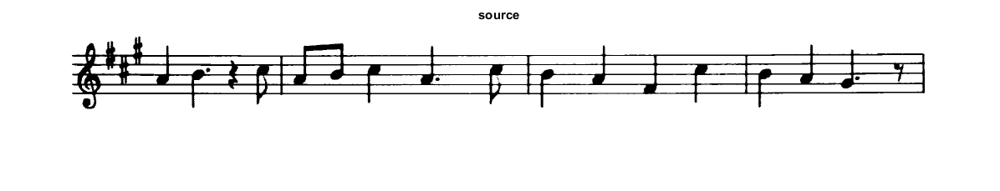
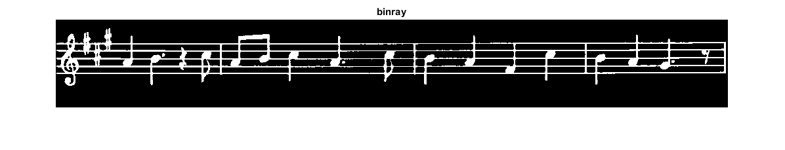
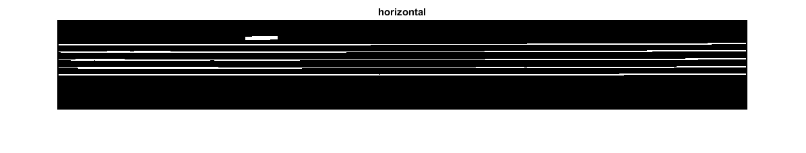
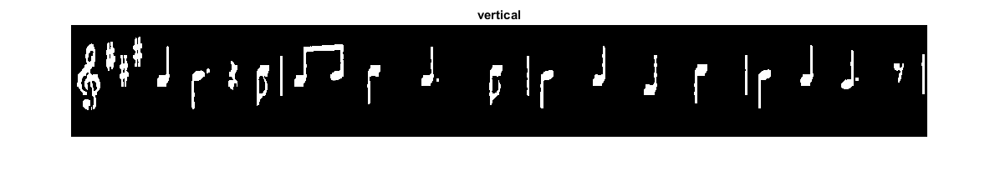
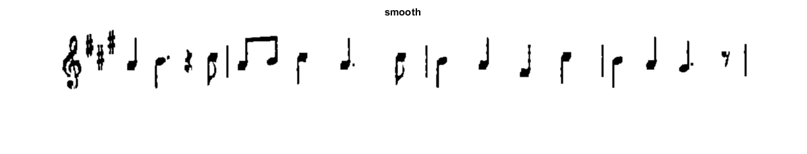

Extracting horizontal and vertical lines using morphology
Use morphology transformations for extracting horizontal and vertical lines sample code
Sources:
Contents
Music Sheet image
Load the source image
src = imread(fullfile(mexopencv.root(),'test','notes.png')); imshow(src), title('source')
Transform source image to gray if it is not
if size(src,3) == 3 gray = cv.cvtColor(src, 'RGB2GRAY'); else gray = src; end
Transform grayscale image to binary by applying adaptiveThreshold on the bitwise_not of gray
assert(isinteger(gray), 'Must be integer type for BITCMP to work'); bw = cv.adaptiveThreshold(bitcmp(gray), 'MaxValue',255, ... 'Method','Mean', 'Type','Binary', 'BlockSize',15, 'C',-2); imshow(bw), title('binray')
Create the images that will use to extract the horizontal and vertical lines
horizontal = bw; vertical = bw;
Horizontal Lines
% Specify size on horizontal axis horizontalsize = fix(size(horizontal,2) / 30); % Create structure element for extracting horizontal lines through morphology % operations horizontalStructure = cv.getStructuringElement(... 'Shape','Rect', 'KSize',[horizontalsize,1]); % Apply morphology operations horizontal = cv.erode(horizontal, 'Element',horizontalStructure); horizontal = cv.dilate(horizontal, 'Element',horizontalStructure); % Show extracted horizontal lines imshow(horizontal), title('horizontal')
Vertical Lines
% Specify size on vertical axis verticalsize = fix(size(horizontal,1) / 30); % Create structure element for extracting vertical lines through morphology % operations verticalStructure = cv.getStructuringElement(... 'Shape','Rect', 'KSize',[1,verticalsize]); % Apply morphology operations vertical = cv.erode(vertical, 'Element',verticalStructure); vertical = cv.dilate(vertical, 'Element',verticalStructure); % Show extracted vertical lines imshow(vertical), title('vertical')
Inverse vertical image
vertical = bitcmp(vertical);
%imshow(vertical), title('vertical_bit', 'Interpreter','none')Smooth
Extract edges and smooth image according to the logic:
- extract edges
- dilate(edges)
- src.copyTo(smooth)
- blur smooth img
- smooth.copyTo(src, edges)
% step 1 edges = cv.adaptiveThreshold(vertical, 'MaxValue',255, ... 'Method','Mean', 'Type','Binary', 'BlockSize',3, 'C',-2); % step 2 kernel = ones(2,2,'uint8'); edges = cv.dilate(edges, 'Element',kernel); % step 3 smooth = vertical; % step 4 smooth = cv.blur(smooth, 'KSize',[2 2]); % step 5 vertical(edges~=0) = smooth(edges~=0);
Show final result
imshow(vertical), title('smooth')